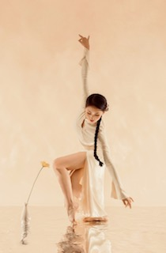

Our Leaading Dancers
曾天怡 · 红杉树青年舞团领舞
红杉树青年舞团领舞,就读于澳大利亚国立大学。自幼学习中国舞，拥有18年以上专业训练经历，擅长中国古典舞、民族民间舞。
曾为2022年北京冬奥会开幕式舞蹈演员，并多次参与国家大剧院大型官方演出任务。2019年随北京市金帆艺术团赴澳大利亚参与庆祝中华人民共和国成立70周年悉尼歌剧院专场演出，并赴中国驻澳大利亚大使馆开展慰问演出。
曾多次荣获国家级、市级舞蹈赛事金奖，并以“优秀”等级获得中国歌剧舞剧院中国民族民间舞最高级13级（表演级1级）等级证书。致力于通过舞蹈传播中华优秀传统文化，促进中澳文化友好交流。

Tianyi Zen · Leading dancer of the Red Cedar Dance Group
Leading dancer of the Red Cedar Dance Group, student at the Australian National University (ANU).
With more than 18 years of professional dance training, she specializes in Chinese classical dance and folk dance and has extensive performance experience.
She was a dancer in the Opening Ceremony of the Beijing 2022 Winter Olympics and has participated in numerous official large-scale productions at the National Centre for the Performing Arts (NCPA) in Beijing.
In 2019, she toured Australia with the Beijing Golden Sail Arts Troupe, performing at the Sydney Opera House and the Embassy of the People’s Republic of China in Australia. She has won multiple gold medals in national and municipal dance competitions and was awarded the highest-level certification in Chinese Folk Dance—Grade 13 (Performance Level 1)—by the China National Opera & Dance Drama Theater, with an “Excellent” rating.
She is dedicated to promoting traditional Chinese culture and fostering cultural exchange and friendship between China and Australia.
潘虹霖 · 红杉树青年舞团领舞
自幼学习中国舞，多次参加各项大型演出，2025年任四川省泸州市文旅宣传大使（舞蹈类）。擅长中国古典舞，有丰富的成人古典舞教学经验，教龄4年。
在北京舞蹈学院研习深造, 获得北京舞蹈学院系列教材《身韵巡礼·基础教材》、《身韵巡礼·剑舞妍影》原创团队研习认证。
于北京师范大学研习深造, 获北京师范大学系列教材《中国古典舞·角色塑造》研习认证。

Hong‑Lin Pan · Leading dancer of the Red Cedar Dance Group
Hong‑Lin started Chinese dance training from childhood and has performed in numerous large‑scale events. In 2025, she was named Cultural‑Tourism Ambassador (Dance Discipline) for Luzhou City, Sichuan Province, China.
She specialises in Chinese classical dance with four years of solid teaching experience for adult learners.
She pursued advanced studies at Beijing Dance Academy and obtained study‑practice certifications awarded by the original creative team for the academy’s textbook series: Shenyun Xunli · Fundamental Curriculum and Shenyun Xunli · Sword‑Dance Elegance.
She also completed advanced training at Beijing Normal University and earned the study‑practice certification for its textbook Chinese Classical Dance · Character Portrayal.